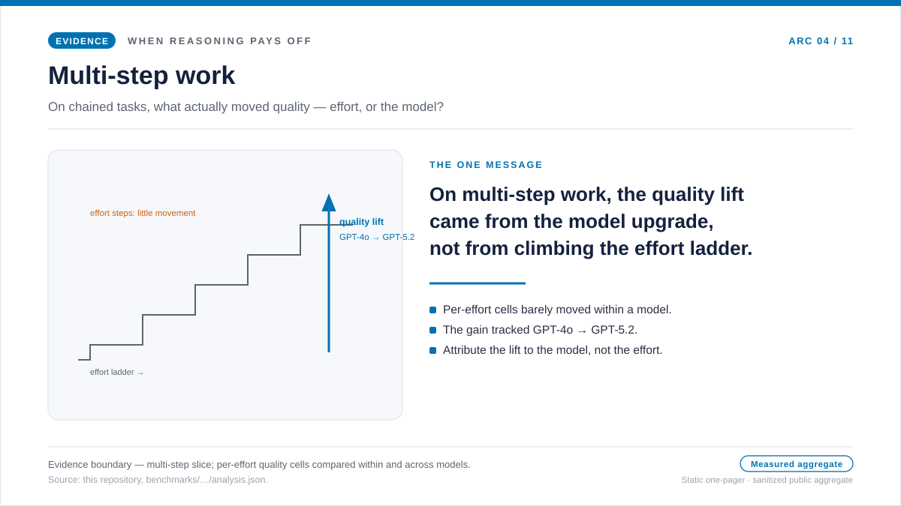
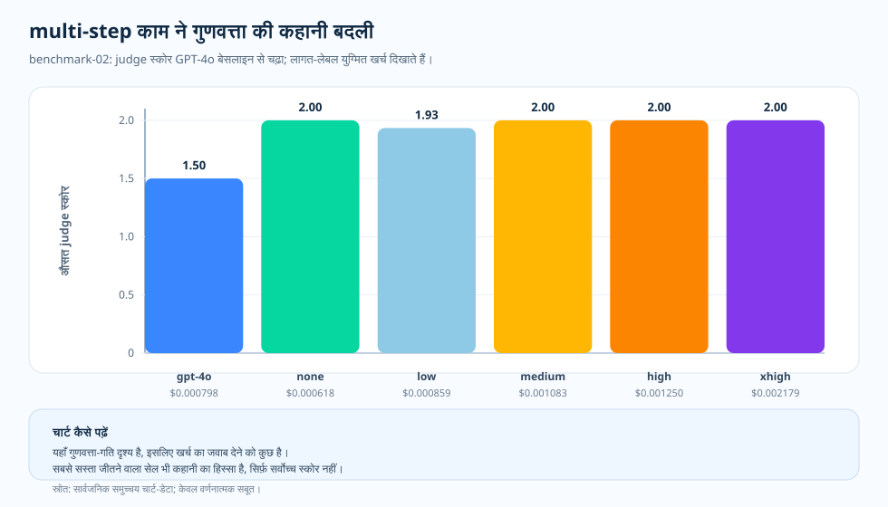

विषय-लेख · benchmark-02 multi-step काम
Multi-step काम: जब reasoning को आज़माना वाजिब ठहरता है
छोटे तथ्यात्मक काम को देखने के बाद reasoning effort को छिपा हुआ ख़र्च मान लेने का मन करता है। जवाब वही रहता है, बस बिल बढ़ता है। लेकिन टीमें ऐसे काम भी करती हैं जहाँ सही जवाब के लिए कई शर्तें एक साथ दिमाग़ में संभालनी पड़ती हैं। तब सवाल फिर खुलता है: क्या ज़्यादा मज़बूत मॉडल या ज़्यादा reasoning effort सिर्फ़ cost नहीं बढ़ाती, बल्कि जवाब भी बेहतर करती है? यह benchmark उसी अंदाज़े की जाँच करता है।
हमने यह क्यों जाँचा
छोटे तथ्यात्मक काम से एक बात साफ़ हुई: जब काम सिर्फ़ याद करके जवाब देने का हो, तो ज़्यादा effort लगाने से स्कोर नहीं बढ़ता, सिर्फ़ cost बढ़ती है। लेकिन हर काम ऐसा नहीं होता। बहुत-से असली कामों में मॉडल को शर्तों की एक छोटी कड़ी सँभालनी पड़ती है — कुछ शर्तें जोड़नी होती हैं, बीच का नतीजा संभालकर रखना होता है, और उसके बाद जवाब देना होता है। ऐसे काम में "इसे थोड़ा और सोचने दो" सीधी बर्बादी नहीं लगता; वहाँ यह वाजिब भी हो सकता है।
इससे एक साफ़ परिकल्पना बनती है। अगर काम सचमुच कई शर्तें एक साथ संभालने की माँग करता है, तो शायद ज़्यादा मज़बूत मॉडल या ज़्यादा reasoning effort सिर्फ़ बिल नहीं बढ़ाती, बल्कि quality में भी असली फ़र्क़ लाती है। यह अंदाज़ा ठीक लगता है, लेकिन प्रयोग यह देखता है कि मापा गया यह हिस्सा भी उसी बात की पुष्टि करता है या नहीं।
इसलिए हमने इसे मापा। benchmark-02 इस multi-step काम को स्थिर रखता है और मॉडल व effort के वही स्तर देखता है — GPT-4o baseline, फिर GPT-5.2 का none, low, medium, high, extra-high — और हर combination पर cost, latency और mean judge score साथ में पढ़ता है। नतीजा मिला-जुला है, और इसे सीधे कहना चाहिए। GPT-5.2 ने GPT-4o baseline के ऊपर quality बढ़ाई, लेकिन GPT-5.2 के भीतर सबसे ऊँचा effort अपने-आप विजेता नहीं बना। सबसे सस्ते top-scoring combination ने तो एक भी reasoning token खर्च नहीं किया। नीचे का one-pager यही बात एक फ़्रेम में दिखाता है, और उसके बाद के खंड मापा गया विवरण देते हैं।

प्रश्न
ज़्यादा reasoning कब सिर्फ़ बिल नहीं बढ़ाती, बल्कि quality सचमुच बेहतर करती है?
सबूत
benchmark-02 के quality, cost, latency और token-shape charts.
नतीजा
GPT-5.2 का low/none हिस्सा, सबसे ऊँचे effort के बिना भी, GPT-4o baseline से साफ़ बेहतर quality देता है।
निर्णय
इस multi-step काम को उस सबसे कम effort पर चलाएँ जो quality bar पार कर दे, और effort तभी बढ़ाएँ जब साथ वाला quality chart सचमुच ऊपर जाए।

गुणवत्ता की हलचल ने व्याख्या बदली
benchmark-02 में baseline GPT-4o configuration का judge score औसतन 1.5 था। GPT-5.2 ने none, medium, high, extra-high effort पर 2.0 हासिल किया और low effort पर 1.93 तक पहुँचा। चार्ट यह नहीं कहता कि "हमेशा effort बढ़ाओ"। यह दिखाता है कि इस workload में इतनी संरचना है कि मॉडल और effort की पसंद को जाँचना वाजिब है।
ज़्यादा अहम बात यह है कि सबसे पहले सफल होने वाले combination कैसे दिखते हैं। GPT-5.2 none ने प्रति-request औसत $0.000618 पर 2.0 हासिल किया। यानी सबसे ऊँचा effort default बनाए बिना भी यह trial काम का साबित होता है।
चार्ट कैसे पढ़ें
X-axis model/effort combination है, और Y-axis mean judge score। हर bar के नीचे का label उसी combination की mean cost per request है। इस जोड़ी को साथ पढ़ना ज़रूरी है, क्योंकि सिर्फ़ quality bar देखने पर ज़रूरत से ज़्यादा महँगा विकल्प चुन लेने का ख़तरा रहता है। अगर कई combinations rubric के शीर्ष तक पहुँच जाती हैं, तो सस्ती और तेज़ configuration ज़्यादा दिलचस्प हो जाती है।
यह frequency histogram नहीं है। हर bar एक summarized experimental combination है, जिसकी अपनी sample count और standard deviation source table में दी गई है।
यह बेंचमार्क अलग क्यों था
छोटे तथ्यात्मक काम में ज़्यादातर संक्षिप्त जवाब चाहिए थे। multi-step काम में मॉडल को reasoning की एक छोटी कड़ी संभालकर रखनी थी। इससे यह बदल गया कि extra thinking से क्या हासिल हो सकता है। अब मॉडल और effort की पसंद को सिर्फ़ बढ़े हुए खर्च के सामने नहीं, बल्कि कम ग़लत जवाबों के संदर्भ में पढ़ना पड़ा।
फिर भी सबूत यह नहीं कहता कि हमेशा सबसे ज़्यादा effort लगाओ। effort बढ़ने पर latency भी बढ़ती है, और extra-high effort औसतन 3.3s था। quality के ceiling पर पहुँचने के बाद असली फ़र्क़ latency का होता है। तब सवाल यह रह जाता है कि क्या धीमा configuration सचमुच कुछ नया दे रहा है।
इसका मतलब क्या है
reasoning तब काम की होती है जब वह जवाब बदलती है, सिर्फ़ जवाब की आभा नहीं। सबसे पहले multi-step काम पर ही इसे आज़माना चाहिए। इस तरह के काम में इतनी आंतरिक संरचना होती है कि मॉडल को फ़ायदा मिल सकता है, और evaluator उस फ़र्क़ को देख भी सकता है।
इसलिए निष्कर्ष यह नहीं है कि "हर जगह और reasoning लगाओ"। सही बात यह है: "इस multi-step काम को उस सबसे कम effort स्तर पर चलाओ जो quality bar पार कर दे।"
सबूत की तालिका
docs/blog/data/chart-data/cost-curves-effort/benchmark-02/quality.json
से आते हैं; evidence dashboard
(served chart data) में
इन्हें cost chart के साथ जोड़कर पढ़ें।

| Evidence row | Measure A | Measure B | यह क्या जोड़ता है |
|---|---|---|---|
| GPT-4o baseline | Judge score 1.50 | $0.000798/request | तुलना के लिए साफ़ baseline देता है। |
| GPT-5.2 none | Judge score 2.00 | $0.000618/request | मापे गए इस सार्वजनिक हिस्से का सबसे सस्ता top-scoring combination। |
| GPT-5.2 low | Judge score 1.93 | $0.000859/request | baseline से ऊपर है, लेकिन यहाँ सबसे साफ़ विजेता नहीं। |
| GPT-5.2 extra-high | Judge score 2.00 | $0.002179/request | स्कोर सबसे ऊपर है, लेकिन bill बड़ा है और latency भी ज़्यादा। |
स्रोत और सबूत-सीमा
ऊपर दिया गया हर मान इस repository की किसी public artifact तक वापस जाता है, और cost का हर दावा एक dated pricing snapshot पर आधारित है। यह लेख जिस routing habit की सलाह देता है — quality bar पार करते ही सबसे कम effort पर रुक जाना — वह इसकी अपनी operating inference है। नीचे की दो tiers साफ़ करती हैं कि documented input कहाँ तक है और inference कहाँ से शुरू होती है।
- [1] Tier 1 — methodology contract: यह repository,
docs/05-methodology.md(v1.0)। हर configuration पर N = 20 authored samples, R = 3 repeats, और सिर्फ़ public aggregate हिस्सा। चार्ट को पढ़ने की यह भाषा इसी frozen stance को मानती है; error bars standard deviation हैं, confidence intervals नहीं, और N = 20 पर p-values का दावा नहीं किया गया है। - [2] Tier 1 — PAYG मूल्य स्नैपशॉट: प्रति-request लागत इस रिपॉज़िटरी की
pricing/azure-openai-payg-2026-05.yamlपर गणित है — यह Azure OpenAI के आधिकारिक सार्वजनिक मूल्य-पृष्ठ का 2026-05-19 को लिया गया फ़्रोज़न स्नैपशॉट है। सूची-मूल्य हिलने पर लागत-संख्याएँ भी बदलेंगी। - [3] Tier 2 — benchmark-02 slice measurement: यह repository,
benchmarks/02-multi-step-reasoning/analysis.json। यहीं से per-effort quality values आती हैं — GPT-4o baseline का 1.5, GPT-5.2 none, medium, high, extra-high का 2.0, GPT-5.2 low का 1.93 — और यहीं दिखता है कि GPT-5.2 none बिना reasoning tokens खर्च किए $0.000618 per request पर सबसे सस्ता top-scoring combination था। इसी में $0.000618 से $0.002179 per request तक की matching cost figures भी हैं। - [4] Tier 2 — rendered chart data: यह repository,
docs/blog/data/chart-data/cost-curves-effort/benchmark-02/cost-per-request.json,quality.json, औरlatency.json। इन्हेंdocs/blog/data/chart-data/token-composition/benchmark-02/tokens.jsonके साथ पढ़ने पर paired evidence मिलता है कि इस हिस्से में quality की बढ़त सिर्फ़ ऊँचे bill के साथ नहीं, बल्कि वाजिब bill के साथ आई। - [5] Evidence dashboard: रेंडर हुआ benchmark-02 quality और cost paired chart उन्हीं artifacts का audit करने योग्य रूप है।
मापा गया यह हिस्सा क्या साबित करता है और क्या नहीं: यह दिखाता है कि इस multi-step काम में GPT-5.2 ने GPT-4o baseline के ऊपर measurable quality lift दी। लेकिन यह साबित नहीं करता कि ऊँचा reasoning effort हमेशा quality बढ़ाता है या extra bill को जायज़ ठहराता है — यहाँ सबसे सस्ते top-scoring combination ने एक भी reasoning token खर्च नहीं किया — और यह भी नहीं कि यही बढ़त छोटे factual काम, tool-using agents, या synthesis work में भी दिखेगी। हर topic को अलग मापना पड़ता है।
इस सबूत से क्या कहा जा सकता है
मापे गए इस हिस्से में multi-step काम ने GPT-4o baseline के 1.5 से GPT-5.2 के 2.0 तक measurable quality lift दिखाया, और यह बढ़त effort के स्तर ऊपर ले जाने से नहीं, मॉडल-अपग्रेड से आई। इस सीरीज़ में यह बात और मज़बूत होती है कि reasoning तभी वाजिब ठहरती है जब जवाब सचमुच बदलता है।
व्यावहारिक नियम
- उसी multi-step combination का quality chart, cost chart के साथ जोड़कर पढ़ें। सिर्फ़ quality bar न देखें।
- वही सबसे कम effort configuration चुनें जो quality bar पार कर दे। ऊँचे विकल्प को तभी उम्मीदवार मानें जब score सचमुच बदले।
- effort बढ़ाने से पहले latency ज़रूर देखें। effort बढ़ने पर इंतज़ार भी बढ़ता है।
- workload shape बदलते ही दोबारा मापें। मापे गए इस हिस्से की बढ़त दूसरे topics पर अपने-आप लागू नहीं होती।
व्यावहारिक नियम: multi-step काम में पहले वही सबसे कम model/effort configuration चुनें जो quality bar पार कर दे, और reasoning effort तभी बढ़ाएँ जब इस workload shape पर साथ वाला quality chart सचमुच ऊपर जाए। बिल तभी वाजिब है जब quality भी चढ़े; सिर्फ़ ज़्यादा ख़र्च अपने-आप काफ़ी नहीं है।
आगे: टूल-एजेंट ceiling checks: जब extra effort से score आगे नहीं बढ़ता — टूल इस्तेमाल वाले काम में जब extra reasoning quality के ceiling से टकराती है, तो चार्ट सबसे पहले क्या दिखाता है?